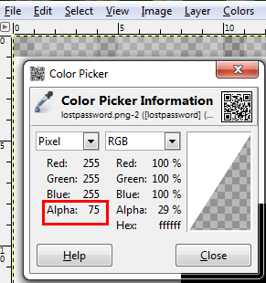

Pixels are a programmable color on a computer display. It means it must have some value. Now we start to find out that there is a value behind the pixels. After Googling a Photoshop tutorial, we found the Color Picker tool for viewing the alpha value of each pixel. By removing all layers via color picker, the alpha values for each pixel were revealed.

By using this method, we found the all alpha values. It took me a while, so I’ll just give you the first five: 75, 121, 116, 115, 77. After gathering all alpha values, we converted them to ASCII value and the output was a Base64 encoded value.